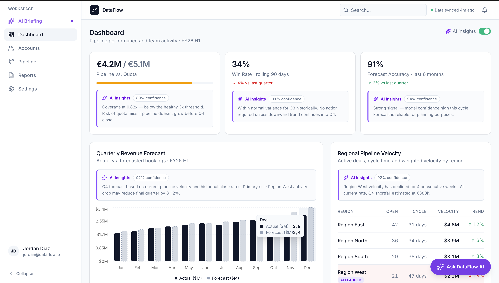
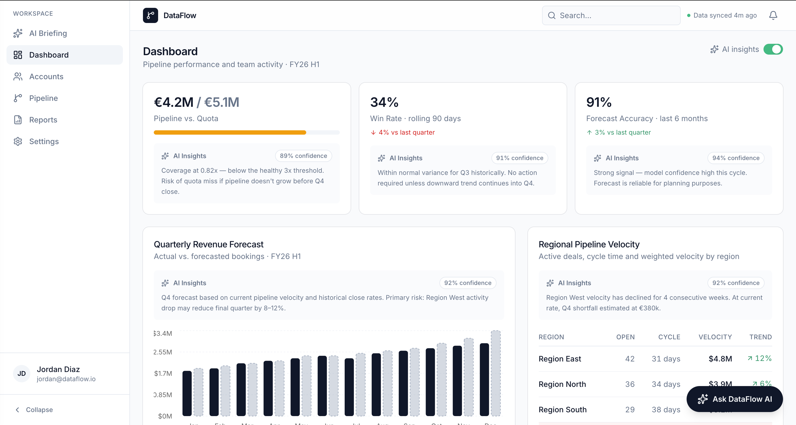
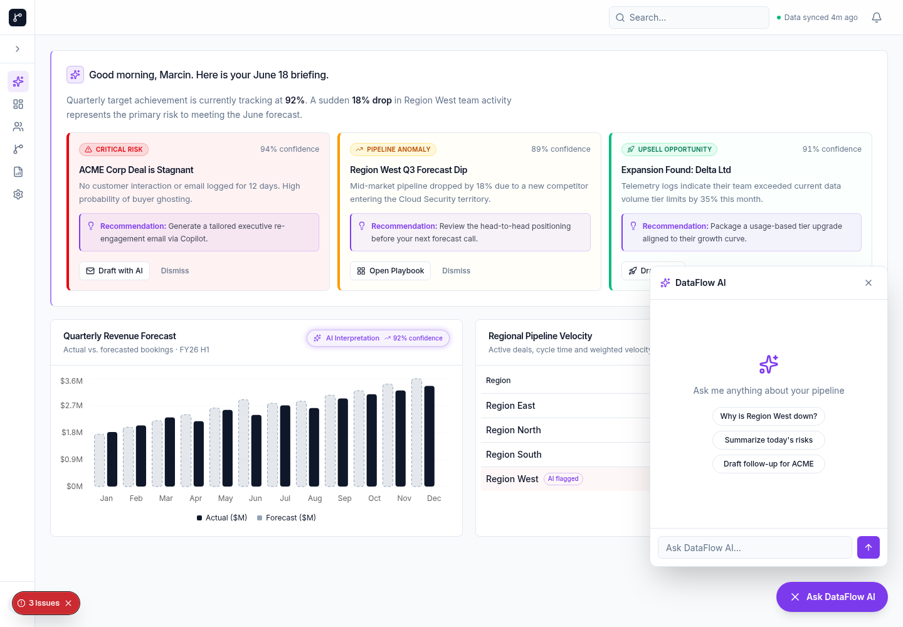
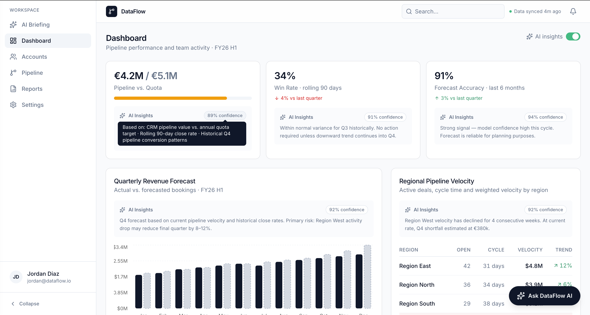
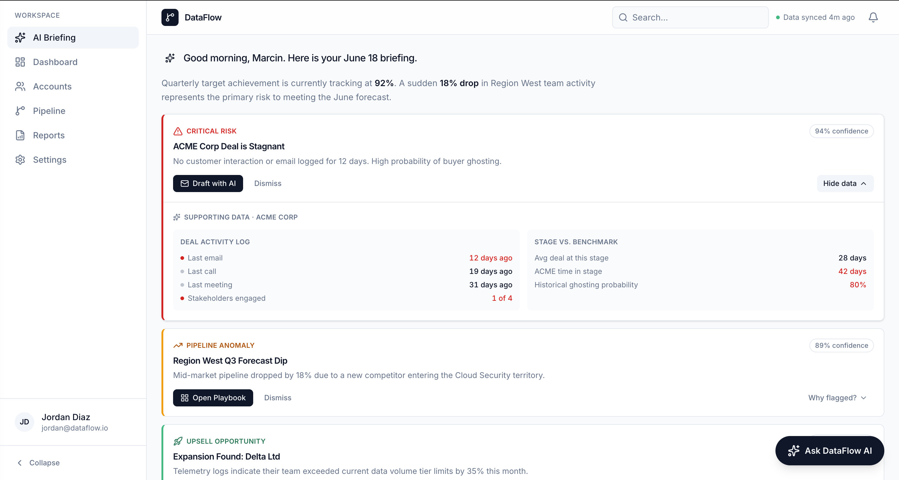
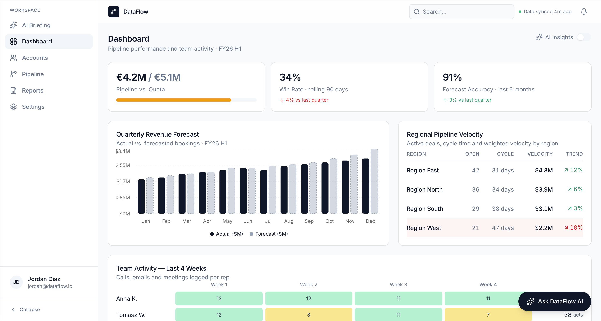
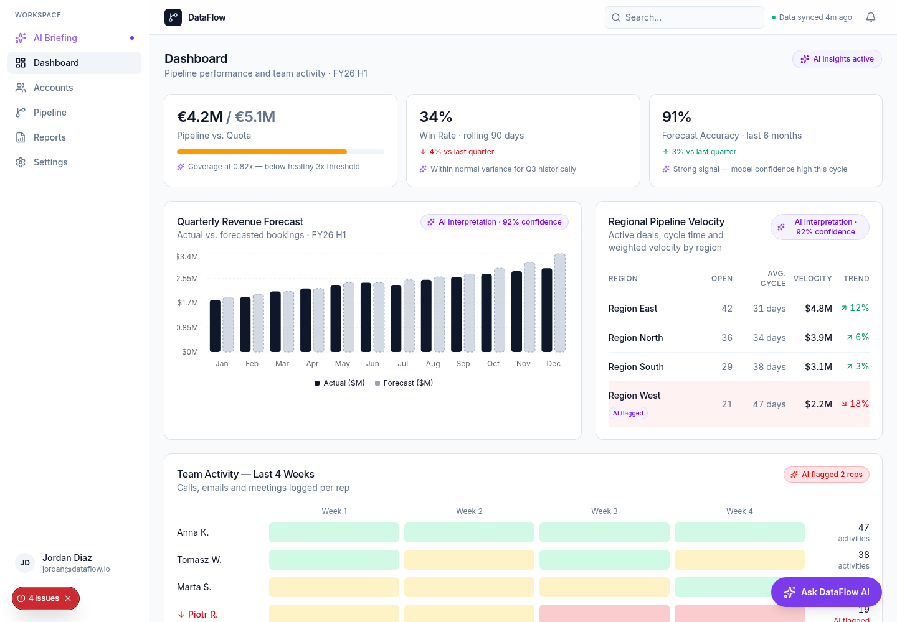

The design challenge
The brief asked for an AI Smart Assistant and Insight Panel for DataFlow, a B2B CRM platform. Sales Managers were drowning in data — hundreds of charts and tables — but the platform gave them no help interpreting any of it. The stated problem was data overload.
The real problem was different. Data overload is a symptom. The underlying need was decision support: tell me what to do next, and why. That reframe drove every decision that followed. I wasn't designing a smarter dashboard. I was designing an action system.
There was no design system to inherit. No component library, no established tokens, no precedent. Everything — spacing scale, colour decisions, component patterns, AI interaction conventions — had to be built and justified from first principles.
How AI changed the process
AI compressed research that would normally take days into hours — desk research, competitive analysis, persona. That acceleration mattered: I arrived at ideation with real research behind me, not assumptions.
AI also generated the first version of almost everything else: layouts, component structures, interaction patterns. And that's where the real work began. The first version was almost always technically reasonable and wrong in the same way — failing on judgment. The sidebar was too much. The grid didn't communicate priority. The chat overlay broke the context it depended on. The purple was inverting the hierarchy.
Every significant design decision in this case study came from looking at what AI generated and knowing it was wrong — and being able to say exactly why.
What I rejected,
and why
Four iterations shaped the final design.
The first version came from AI: violet for everything AI-related — navigation labels, icons, insight pills, text labels. When I saw it prototyped, three problems were immediately visible.
The "AI Briefing" nav item was violet — it drew more attention than the actually selected item, creating visual competition where there should be clear hierarchy. Purple is typically reserved for CTAs, but the primary CTA here was black — so the AI accent was pulling more visual weight than the action it was meant to support. And the AI Insights sections on the dashboard looked pasted on, not native — the colour made them feel like an add-on rather than a feature that belonged to the product.
The decision: remove colour as an AI signal entirely. The replacement wasn't another colour — it was a muted background that uses the same surface language as the rest of the interface. AI Insights look like they belong to the card, not like they've been added on top of it. AI-generated content is identified through the sparkle icon and an explicit text label only.


Left: violet applied to every AI-related element. The "AI Briefing" nav item draws more attention than the selected item; the AI Insights pill competes with the data it's meant to support. Right: colour removed entirely. The sparkle icon and "AI Insights" label do the identification work; the AI layer belongs to the product rather than sitting on top of it.
Two separate iterations, one underlying problem. First: AI tasks and assistant in a persistent right sidebar, always visible. The sidebar competed with every screen — always present, never in focus, adding visual weight to an interface that was already information-dense.
Second: AI suggested placing the alert cards in a grid, because the Dashboard was already grid-based. The logic was locally coherent — but a grid communicates equivalence. Three things of equal importance. That's the wrong mental model for triage; the whole point is that one deal is more critical than the others. A grid throws away the only thing that matters: which problem needs attention first.
Both iterations led to the same conclusion: the AI layer needed its own dedicated screen. Not a panel bolted to the side, not cards embedded in the dashboard — a surface the user opens intentionally, where the whole screen exists for one job.


Left: the persistent sidebar — always there, always competing. Right: AI Briefing as a dedicated screen. Nothing competes. The grid iteration (three equal cards) had the same problem as the sidebar: it hid the hierarchy the triage flow depended on.


Left: the overlay version — the chat panel covers the data the user opened it to ask about. Right: push layout. The data stays visible; the conversation happens alongside it.
Design system
The system was built in code from zero — no inherited library, no existing precedent. The tokens and decisions behind it are documented here.
An achromatic base with three semantic colours for data values and one AI accent that was defined in the token system but ultimately removed from visible UI elements — replaced by icon and label as AI identifiers.
Inter throughout — a single typeface with a strict scale. Size and weight carry all the hierarchy; no decorative variation.
Three card themes share one component structure — only the semantic colour changes. This was a deliberate decision: the user learns the card pattern once and applies it to all three alert types without relearning.
One component structure, three semantic themes. The left border colour and category label change; everything else — spacing, typography, CTA position, accordion trigger — stays identical. The user learns the pattern once.
4px base unit throughout. Border radius defined as a single token (--radius: 0.5rem) with derived scale — sm, md, lg, xl — so all components share the same rounding logic and can be updated globally from one value.
Every component decision had to pass one test: does this require the user to learn something new, or does it extend something they already know? The accordion uses the same chevron pattern as every other disclosure widget. The confidence pill uses the same border-radius as badges elsewhere. The push layout uses the same card surface as the dashboard widgets. Consistency was the constraint; the token system was how that constraint was enforced.
Every confidence score exposes its reasoning on hover — a tooltip showing exactly which data signals produced the number: call frequency, deal age, historical close rates. The pattern is identical across both screens. Learn it once, apply it everywhere. A score without a basis is an assertion; a score with a basis is evidence the user can verify or challenge.

Hovering a confidence score reveals the data signals behind it — not just the number, but the reasoning. The user can agree with the AI's evidence or decide it doesn't apply to their context.
The "AI flagged" badge uses neutral styling: white fill, grey border, grey text. Not a warning colour — a quiet label that says "the system noticed this" without implying danger. Red is reserved for numeric values only: a deal at 12% close probability, a region down 22%. The badge is not a value; it doesn't get red.
The design
Two high-fidelity screens built in HTML, fully interactive. AI Briefing (J1 — Morning Triage) and Dashboard with AI Insights (J4 — Decision Support). J3 (Explainability on demand) is implemented as the AI chat panel — available on both screens, the user asks, the AI explains.
Three vertically stacked alert cards, ranked by financial urgency. The accordion on each card is closed by default — progressive disclosure. The user sees only what they need to make a decision: category, title, description, CTA. If the alert warrants attention, they expand to see the supporting evidence. If it doesn't, they move on. Nothing is hidden that the user needs upfront; nothing is shown that gets in the way of the decision.
CTAs use the word "Draft" deliberately across all cards — Draft with AI, Draft Offer, Open Playbook. AI proposes; the user decides. In a B2B context where a mistaken action has real relationship consequences, "Draft" removes click anxiety without removing the feature. "Send" would imply finality. "Draft" doesn't.

Accordion expanded on the first card. The supporting evidence — deal activity log, stage vs. benchmark — appears inline without navigating away. Closed by default because the decision (act or dismiss) comes before the evidence. The user drills down only when they need to verify.
AI Insights are positioned above the chart data on every widget — deliberately. The user reads the interpretation first, then sees the data it's based on. The alternative would let the user form their own reading of the chart before seeing the AI's — creating a situation where two interpretations compete rather than one informing the other.
A global toggle lets the user show or hide all AI-generated content simultaneously. When off, the dashboard shows raw data only. This isn't just a preference setting — it's a trust mechanism. The user can verify the AI's interpretation against the underlying data, or choose to work without it entirely. Control stays with the user.
AI Insights above the data on every widget — one to two sentences, always visible, no interaction required to see them. The insight sets the frame; the chart provides the evidence. The toggle in the top right removes the entire AI layer without affecting the underlying data.


Left: AI layer toggled off — raw data only, no AI content anywhere on the page. Right: an earlier approach where the insight lived behind a hover pill. The user had to move the mouse, wait, and point precisely to see information that should have been immediately readable. The always-visible placement isn't a layout preference; it removes an interaction cost that had no reason to exist.
Success metrics
Success criteria were defined upfront — not as engagement targets, but as outcome measures tied to the Jobs to Be Done the design covers. Behavioural metrics serve as diagnostic signals; outcome metrics are the north star.
The north star metric is time-to-first-action: time from login to the first call, email, or deal update logged in CRM. Target: 40% reduction against baseline. Supporting signals: briefing open rate above 80% within the first 30 days, and alert click-through rate above 60% — a lower rate signals the alerts aren't relevant enough to act on.
Outcome metrics here are harder to isolate directly, proxied through reduction in ad-hoc data requests to analysts and self-reported decision confidence in quarterly reviews. The behavioural signal is whether users engage with AI Insights before making pipeline decisions — or skip them entirely.
Behavioural metrics are available from day one. Outcome metrics require at least one full sales quarter — quota attainment and deal loss rates are influenced by too many variables to evaluate earlier without drawing false conclusions. Recommended: behavioural signals in weeks 1–4, first outcome review after Q1, full evaluation after Q2.
These metrics were chosen because they measure what the design was actually built to change — decision speed and decision confidence — not just whether users clicked on the feature.
Outcome
The brief started with a reframe: the problem wasn't data overload, it was the absence of decision support. Sales managers didn't need more charts — they needed the answer to "what do I do next, and why."
The AI Briefing screen answers that question without requiring the user to interpret anything. Three ranked cards, a recommended action on each, supporting evidence one click away. No charts, no tables, nothing that requires the user to form their own reading before acting. The triage flow doesn't require navigating anywhere else.
The Dashboard AI Insights layer answers the "why" — an interpretation above every data widget, always visible, always scannable. The user reads the conclusion first, then the data that supports it. The toggle means they can verify or ignore the AI's reading entirely. Trust is built in, not assumed.
The most useful thing this project produced isn't the screens — it's the record of what was tried and rejected. The sidebar, the grid, the overlay, the universal purple: each one was reasonable in the abstract and wrong in practice. The working prototype made that visible. AI generated the first versions; judgment decided which ones to throw away.
That's the process I want to show. Not that I used AI — everyone will — but that I know what to do with what it produces.
Both screens are built in HTML and fully interactive — linked, clickable, and explorable in the browser.